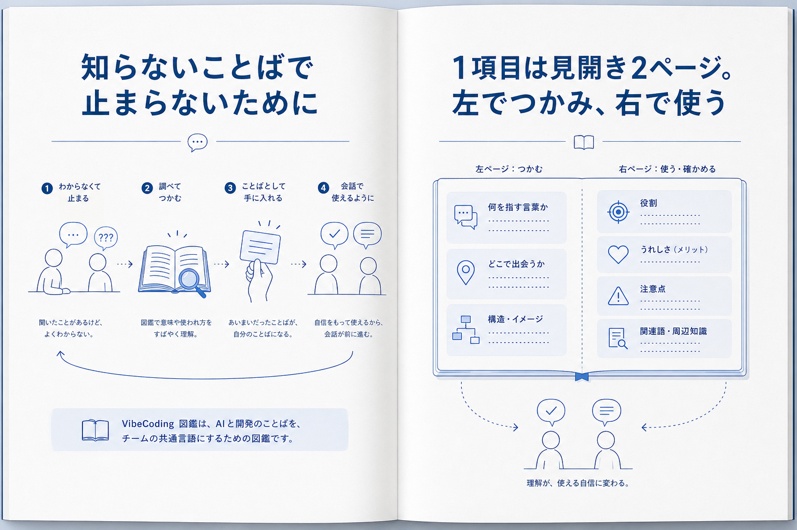

Opening Spread Review
冒頭見開きで伝えること

左ページの役割
「知らない語で止まる」から「会話に戻る」までを、読者の体験として見せる。
読む流れ
困る → 引く → 自分のことばにする → 使う。表紙コピーの答えをここで渡す。
この本の約束
通読ではなく、必要なことばだけ引いて現場に戻れる図鑑だと伝える。
右ページの役割
1項目の見開きを開いた時に、どこを見ればいいかを先に教える。
左でつかむ
意味、出会う場面、構造イメージ。まず会話に参加できる入口を作る。
右で使う
役割、メリット、注意点、関連語。次の判断や会話につなげる。
最後は現場へ戻る
読むことが目的ではなく、理解して会話を前に進めることが目的。